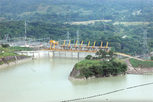

La central hidroeléctrica de peñitas se encuentra ubicada en el estado de Chiapas. Sobre el rio Grijalva, a una distancia aproximadamente de 70 kilómetros de la Central Hidroeléctrica de Malpaso.
Partiendo de Tuxtla Gutiérrez:
Ubíquese en la carretera Dr. Belisario Domínguez. Continúe por Tuxtla Gutiérrez – San Pedro Tapanatepec/México 190. Continúe por México 190 – tome la rampa en dirección a Coatzacoalcos/México 145/México Cuota – siga recto. Continúe hacia Cárdenas – Raudales Malpaso/ Raudales Malpaso-Cárdenas/México 187. Siga hacia la derecha hacia Chis 20 hasta encontrarse en presa la derecha.
Podrá recorrer los alrededores de la presa, tomar fotografías, admirar su embalse enorme que conforma la presa.

posicione el mouse sobre las imágenes